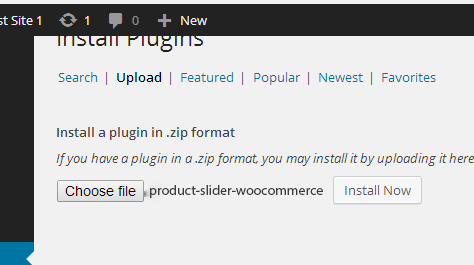
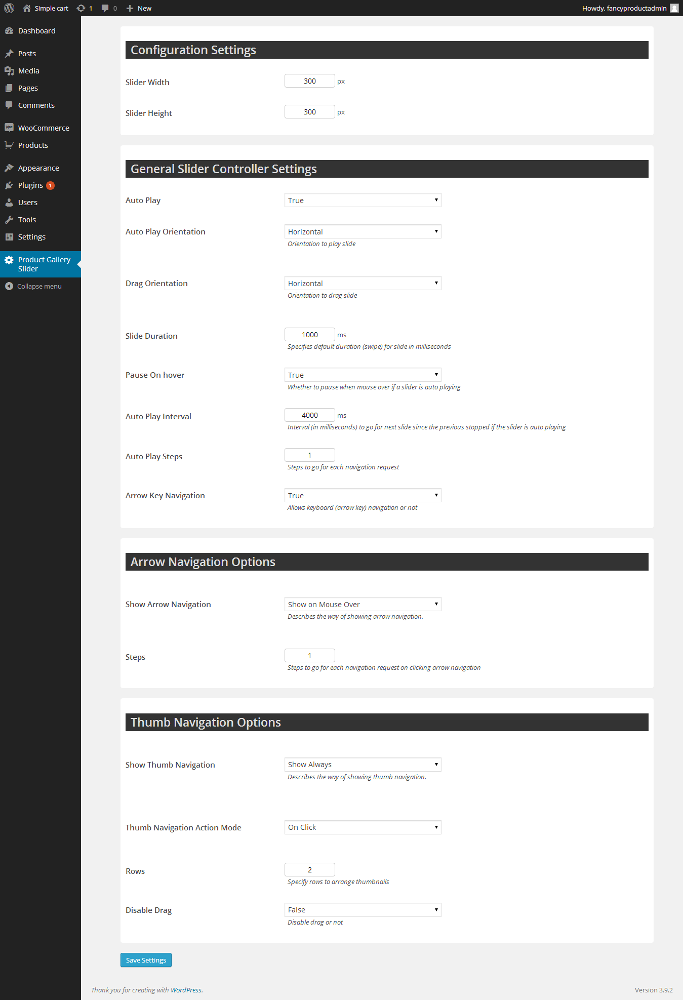

Product Gallery Slider for wooCommerce is a plugin that allows site owners to display a nice touch friendly product slider on your product pages. When you have a large number of images to display and prefers the description to be visible with the images then this is the way to go. It replaces the standard wooCommerce lightbox. Simple plug and play operation.
Try various sizes of the gallery to match it with your theme. If necessary you can easily override the standard styles by writing your own in the style.css. Just write a bot more specific style. However it works great our of the box. See Demo.
Product Gallery Slider for wooCommerce is a plugin that allows site owners to display a nice touch friendly product slider on your product pages
Upload the plugin zip file to your wordpress and click activate plugin.


The options are pretty straight forward. If you have a custom theme then you can simply wrap the product slider in a new div tag and add your own classe. Examin the custom classes we used using a tool like firebug and prepend your wrapper div class to them in the theme style sheet. Then you can add your own styling.
Support is at: info@mclanka.com
Thank you so much for purchasing this plugin. I'd be glad to help you if you have any questions relating to thisplugin. No guarantees, but I'll do my best to assist. If you have a more general question, you might consider visiting the forums and asking your question in the "Item Discussion" section.